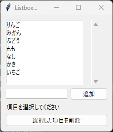
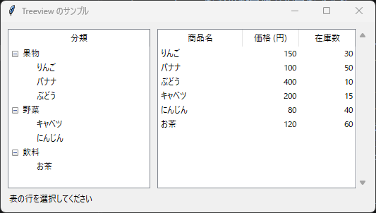
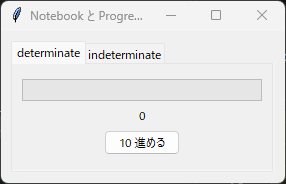
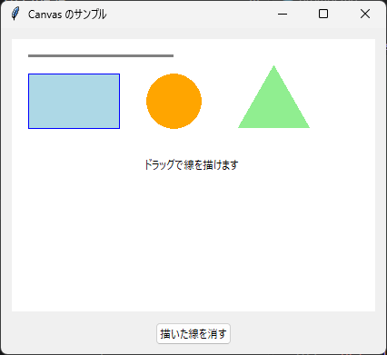

8. 応用ウィジェット
8.1 Listbox と Scrollbar
Listbox は、文字列の一覧を表示し、その中から項目を選ぶウィジェットです。ttk には Listbox がないため、tk のものを使います。主なメソッドを次に示します。
メソッド |
説明 |
|---|---|
|
指定した位置に項目を追加します。位置は 0 から数える整数か |
|
項目を削除します。終了を省略すると 1 項目だけを削除します。Entry と異なり、終了位置の項目も削除されます。 |
|
指定した位置の項目を返します。 |
|
選択されている項目の位置をタプルで返します。 |
|
指定した項目が見えるようにスクロールします。 |
selectmode オプションで選択の方法を指定できます。"browse"（既定値）と "single" は 1 項目だけ、"multiple" はクリックした項目をすべて、"extended" は Shift キーや Ctrl キーを使って複数の項目を選択できます。選択が変わると <<ListboxSelect>> イベントが発生します。
Scrollbar は、Listbox や Text の内容をスクロールするウィジェットです。Scrollbar と対象のウィジェットは、次のように互いを設定して連携させます。
scrollbar = ttk.Scrollbar(frame, orient="vertical", command=listbox.yview)
listbox.configure(yscrollcommand=scrollbar.set)
command=listbox.yview は、Scrollbar が操作されたときに Listbox をスクロールさせます。yscrollcommand=scrollbar.set は、Listbox がスクロールしたときに Scrollbar のつまみの位置を更新します。横方向の場合は、orient="horizontal"、xview、xscrollcommand を使います。
1"""第 8 章: Listbox と Scrollbar のサンプルです。
2
3項目の追加と削除ができるリストを作ります。
4"""
5
6from __future__ import annotations
7
8import tkinter as tk
9from tkinter import ttk
10
11
12def main() -> None:
13 """項目を編集できるリストを表示します。"""
14 root = tk.Tk()
15 root.title("Listbox のサンプル")
16
17 frame = ttk.Frame(root, padding=10)
18 frame.pack(fill="both", expand=True)
19
20 # exportselection=False: Entry で文字列を選択しても、リストの選択を解除しません
21 listbox = tk.Listbox(
22 frame, height=8, selectmode="extended", exportselection=False
23 )
24 listbox.grid(row=0, column=0, columnspan=2, sticky="nsew")
25
26 # Scrollbar と Listbox を互いに連携させます
27 scrollbar = ttk.Scrollbar(frame, orient="vertical", command=listbox.yview)
28 scrollbar.grid(row=0, column=2, sticky="ns")
29 listbox.configure(yscrollcommand=scrollbar.set)
30
31 fruits = ["りんご", "みかん", "ぶどう", "もも", "なし", "かき", "いちご"]
32 for fruit in fruits:
33 listbox.insert("end", fruit)
34
35 entry = ttk.Entry(frame)
36 entry.grid(row=1, column=0, sticky="ew", pady=(5, 0))
37
38 status = tk.StringVar(value="項目を選択してください")
39 ttk.Label(frame, textvariable=status).grid(
40 row=2, column=0, columnspan=3, sticky="w", pady=(5, 0)
41 )
42
43 def add_item() -> None:
44 """入力欄の文字列をリストの末尾に追加します。"""
45 value = entry.get().strip()
46 if value:
47 listbox.insert("end", value)
48 listbox.see("end") # 追加した項目が見えるようにスクロールします
49 entry.delete(0, "end")
50
51 def delete_selected() -> None:
52 """選択されている項目をすべて削除します。"""
53 # 前から削除すると後ろの番号がずれるため、後ろから削除します
54 for index in reversed(listbox.curselection()):
55 listbox.delete(index)
56 # プログラムから削除しても <<ListboxSelect>> は発生しないため、
57 # 表示を自分で更新します
58 show_selection()
59
60 def show_selection() -> None:
61 """選択中の項目をラベルに表示します。"""
62 selected = [listbox.get(index) for index in listbox.curselection()]
63 if selected:
64 status.set("選択中: " + "、".join(selected))
65 else:
66 status.set("項目を選択してください")
67
68 def on_select(event: tk.Event[tk.Misc]) -> None:
69 """選択が変わったときに呼ばれます。"""
70 show_selection()
71
72 ttk.Button(frame, text="追加", command=add_item).grid(
73 row=1, column=1, columnspan=2, sticky="ew", padx=(5, 0), pady=(5, 0)
74 )
75 ttk.Button(frame, text="選択した項目を削除", command=delete_selected).grid(
76 row=3, column=0, columnspan=3, sticky="ew", pady=(5, 0)
77 )
78 listbox.bind("<<ListboxSelect>>", on_select)
79
80 frame.rowconfigure(0, weight=1)
81 frame.columnconfigure(0, weight=1)
82
83 root.mainloop()
84
85
86if __name__ == "__main__":
87 main()

実行結果
8.2 Treeview
Treeview は、項目を木構造または表形式で表示するウィジェットです。Treeview の各行には、先頭の木構造の列（列名 "#0"）と、columns オプションで定義した列があります。主なメソッドを次に示します。
メソッド |
説明 |
|---|---|
|
行を追加し、行の ID を返します。最上位の行を追加する場合、親には |
|
列の見出しを設定します。 |
|
列の幅や文字列の位置を設定します。 |
|
選択されている行の ID をタプルで返します。 |
|
指定した行と列の値を返します。 |
|
行の情報を辞書で返します。 |
|
行を削除します。 |
|
子の行の ID をタプルで返します。 |
show="headings" を指定すると "#0" 列が非表示になり、表として使えます。選択が変わると <<TreeviewSelect>> イベントが発生します。
1"""第 8 章: Treeview のサンプルです。
2
3左側に木構造 (分類)、右側に表形式 (一覧) の Treeview を並べます。
4"""
5
6from __future__ import annotations
7
8import tkinter as tk
9from tkinter import ttk
10
11# (分類, 商品名, 価格, 在庫数) の一覧です
12PRODUCTS: list[tuple[str, str, int, int]] = [
13 ("果物", "りんご", 150, 30),
14 ("果物", "バナナ", 100, 50),
15 ("果物", "ぶどう", 400, 10),
16 ("野菜", "キャベツ", 200, 15),
17 ("野菜", "にんじん", 80, 40),
18 ("飲料", "お茶", 120, 60),
19]
20
21
22def main() -> None:
23 """木構造と表形式の Treeview を表示します。"""
24 root = tk.Tk()
25 root.title("Treeview のサンプル")
26
27 frame = ttk.Frame(root, padding=10)
28 frame.pack(fill="both", expand=True)
29
30 # 木構造: 分類ごとに商品を子要素として追加します
31 tree = ttk.Treeview(frame, height=10)
32 tree.heading("#0", text="分類")
33 tree.grid(row=0, column=0, sticky="nsew", padx=(0, 10))
34
35 categories: dict[str, str] = {}
36 for category, name, _price, _stock in PRODUCTS:
37 if category not in categories:
38 # 親要素は "" です。戻り値の ID を子要素の追加に使います。
39 categories[category] = tree.insert(
40 "", "end", text=category, open=True
41 )
42 tree.insert(categories[category], "end", text=name)
43
44 # 表形式: show="headings" で先頭の木構造の列を非表示にします
45 columns = ("name", "price", "stock")
46 table = ttk.Treeview(
47 frame, columns=columns, show="headings", height=10, selectmode="browse"
48 )
49 table.heading("name", text="商品名")
50 table.heading("price", text="価格 (円)")
51 table.heading("stock", text="在庫数")
52 table.column("name", width=120)
53 table.column("price", width=80, anchor="e")
54 table.column("stock", width=80, anchor="e")
55 table.grid(row=0, column=1, sticky="nsew")
56
57 for _category, name, price, stock in PRODUCTS:
58 table.insert("", "end", values=(name, price, stock))
59
60 scrollbar = ttk.Scrollbar(frame, orient="vertical", command=table.yview)
61 scrollbar.grid(row=0, column=2, sticky="ns")
62 table.configure(yscrollcommand=scrollbar.set)
63
64 status = tk.StringVar(value="表の行を選択してください")
65 ttk.Label(frame, textvariable=status).grid(
66 row=1, column=0, columnspan=3, sticky="w", pady=(5, 0)
67 )
68
69 def on_select(event: tk.Event[tk.Misc]) -> None:
70 """選択された行の値を表示します。"""
71 selected = table.selection() # 選択された行の ID のタプル
72 if not selected:
73 return
74 item_id = selected[0]
75 # set(行の ID, 列名) で、その行の指定した列の値を取得します
76 name = table.set(item_id, "name")
77 price = table.set(item_id, "price")
78 stock = table.set(item_id, "stock")
79 status.set(f"{name}: {price} 円、在庫 {stock} 個")
80
81 table.bind("<<TreeviewSelect>>", on_select)
82
83 frame.rowconfigure(0, weight=1)
84 frame.columnconfigure(1, weight=1)
85
86 root.mainloop()
87
88
89if __name__ == "__main__":
90 main()

実行結果
8.3 Notebook
Notebook は、タブで画面を切り替えるウィジェットです。各タブの内容は Frame などのウィジェットとして作成し、add(ウィジェット, text="タブ名") で追加します。引数なしの select() は選択中のタブのウィジェット名（文字列）を返し、index("current") は選択中のタブの番号を返します。タブが切り替わると <<NotebookTabChanged>> イベントが発生します。
8.4 Progressbar
Progressbar は、処理の進み具合を表示するウィジェットです。mode オプションで次の 2 種類を選びます。
モード |
説明 |
|---|---|
|
進み具合を 0 から |
|
終わりが分からない処理の実行中であることを、往復するバーで表示します。 |
次のサンプルコードは、Notebook の 2 つのタブに、それぞれのモードの Progressbar を配置します。
1"""第 8 章: Notebook と Progressbar のサンプルです。
2
32 つのタブに、2 種類のモードの Progressbar をそれぞれ配置します。
4"""
5
6import tkinter as tk
7from tkinter import ttk
8
9
10def main() -> None:
11 """タブ付きのウィンドウを表示します。"""
12 root = tk.Tk()
13 root.title("Notebook と Progressbar")
14
15 notebook = ttk.Notebook(root)
16 notebook.pack(fill="both", expand=True, padx=10, pady=10)
17
18 # タブ 1: determinate モード (進み具合が分かる処理に使います)
19 tab1 = ttk.Frame(notebook, padding=10)
20 notebook.add(tab1, text="determinate")
21
22 progress = tk.IntVar(value=0)
23 ttk.Progressbar(
24 tab1,
25 orient="horizontal",
26 length=240,
27 mode="determinate",
28 maximum=100,
29 variable=progress,
30 ).pack(pady=5)
31 ttk.Label(tab1, textvariable=progress).pack()
32
33 def step_forward() -> None:
34 """進捗を 10 進めます。100 を超えたら 0 に戻します。"""
35 progress.set((progress.get() + 10) % 110)
36
37 ttk.Button(tab1, text="10 進める", command=step_forward).pack(pady=5)
38
39 # タブ 2: indeterminate モード (終わりが分からない処理に使います)
40 tab2 = ttk.Frame(notebook, padding=10)
41 notebook.add(tab2, text="indeterminate")
42
43 busy = ttk.Progressbar(
44 tab2, orient="horizontal", length=240, mode="indeterminate"
45 )
46 busy.pack(pady=5)
47
48 buttons = ttk.Frame(tab2)
49 buttons.pack(pady=5)
50 # start の引数は、バーを動かす間隔 (ミリ秒) です
51 ttk.Button(buttons, text="開始", command=lambda: busy.start(20)).pack(
52 side="left"
53 )
54 ttk.Button(buttons, text="停止", command=busy.stop).pack(side="left")
55
56 root.mainloop()
57
58
59if __name__ == "__main__":
60 main()
ch08_notebook_progressbar.py をダウンロード

実行結果
8.5 Canvas
Canvas は、線や図形、文字列、画像を自由に描画するウィジェットです。座標は Canvas の左上を原点とし、x 座標は右方向、y 座標は下方向に増えます。図形を描画する主なメソッドを次に示します。
メソッド |
描画する図形 |
|---|---|
|
指定した点を結ぶ線 |
|
左上 (x1, y1) と右下 (x2, y2) を指定した四角形 |
|
指定した四角形に内接する楕円 |
|
指定した点を頂点とする多角形 |
|
指定した位置を中心とする文字列 |
|
指定した位置を中心とする画像 |
create_oval で中心 \((c_x, c_y)\)、半径 \(r\) の円を描くには、外接する正方形の左上と右下の座標を次のように計算して指定します。
描画メソッドは、描画した図形の ID（整数）を返します。また、tags オプションで図形に任意の名前（タグ）を付けられます。ID やタグを指定して、描画した後の図形を操作できます。
メソッド |
説明 |
|---|---|
|
図形を移動します。 |
|
図形の座標を変更します。 |
|
色などのオプションを変更します。 |
|
図形を削除します。 |
次のサンプルコードは、基本的な図形を描画し、マウスのドラッグで線を描けるようにします。マウスで描いた線にはタグ "drawing" を付けているため、最初に描画した図形を残したまま、マウスで描いた線だけを削除できます。
1"""第 8 章: Canvas のサンプルです。
2
3図形を描画し、マウスのドラッグで線を描けるようにします。
4"""
5
6from __future__ import annotations
7
8import tkinter as tk
9from tkinter import ttk
10
11
12def draw_circle(
13 canvas: tk.Canvas, cx: float, cy: float, r: float, color: str
14) -> int:
15 """中心 (cx, cy)、半径 r の円を描き、図形の ID を返します。
16
17 create_oval は外接する四角形の左上と右下の座標で指定します。
18 """
19 return canvas.create_oval(
20 cx - r, cy - r, cx + r, cy + r, fill=color, outline=""
21 )
22
23
24def main() -> None:
25 """図形とお絵かき機能を持つ Canvas を表示します。"""
26 root = tk.Tk()
27 root.title("Canvas のサンプル")
28
29 canvas = tk.Canvas(root, width=400, height=300, bg="white")
30 canvas.pack(padx=10, pady=10)
31
32 def draw_shapes() -> None:
33 """基本的な図形を描画します。"""
34 canvas.create_line(20, 20, 180, 20, width=3, fill="gray")
35 canvas.create_rectangle(
36 20, 40, 120, 100, fill="lightblue", outline="blue"
37 )
38 draw_circle(canvas, 180, 70, 30, "orange")
39 canvas.create_polygon(250, 100, 290, 30, 330, 100, fill="lightgreen")
40 canvas.create_text(
41 200, 140, text="ドラッグで線を描けます", fill="black"
42 )
43
44 last_point: tuple[int, int] | None = None
45
46 def on_press(event: tk.Event[tk.Misc]) -> None:
47 """ドラッグの開始位置を記録します。"""
48 nonlocal last_point
49 last_point = (event.x, event.y)
50
51 def on_drag(event: tk.Event[tk.Misc]) -> None:
52 """前回の位置から現在の位置まで線を引きます。"""
53 nonlocal last_point
54 if last_point is not None:
55 x0, y0 = last_point
56 canvas.create_line(
57 x0,
58 y0,
59 event.x,
60 event.y,
61 width=2,
62 capstyle="round",
63 tags="drawing",
64 )
65 last_point = (event.x, event.y)
66
67 def clear_drawing() -> None:
68 """マウスで描いた線 (タグ "drawing" の図形) だけを削除します。"""
69 canvas.delete("drawing")
70
71 canvas.bind("<ButtonPress-1>", on_press)
72 canvas.bind("<B1-Motion>", on_drag)
73
74 ttk.Button(root, text="描いた線を消す", command=clear_drawing).pack(
75 pady=(0, 10)
76 )
77
78 draw_shapes()
79 root.mainloop()
80
81
82if __name__ == "__main__":
83 main()

実行結果